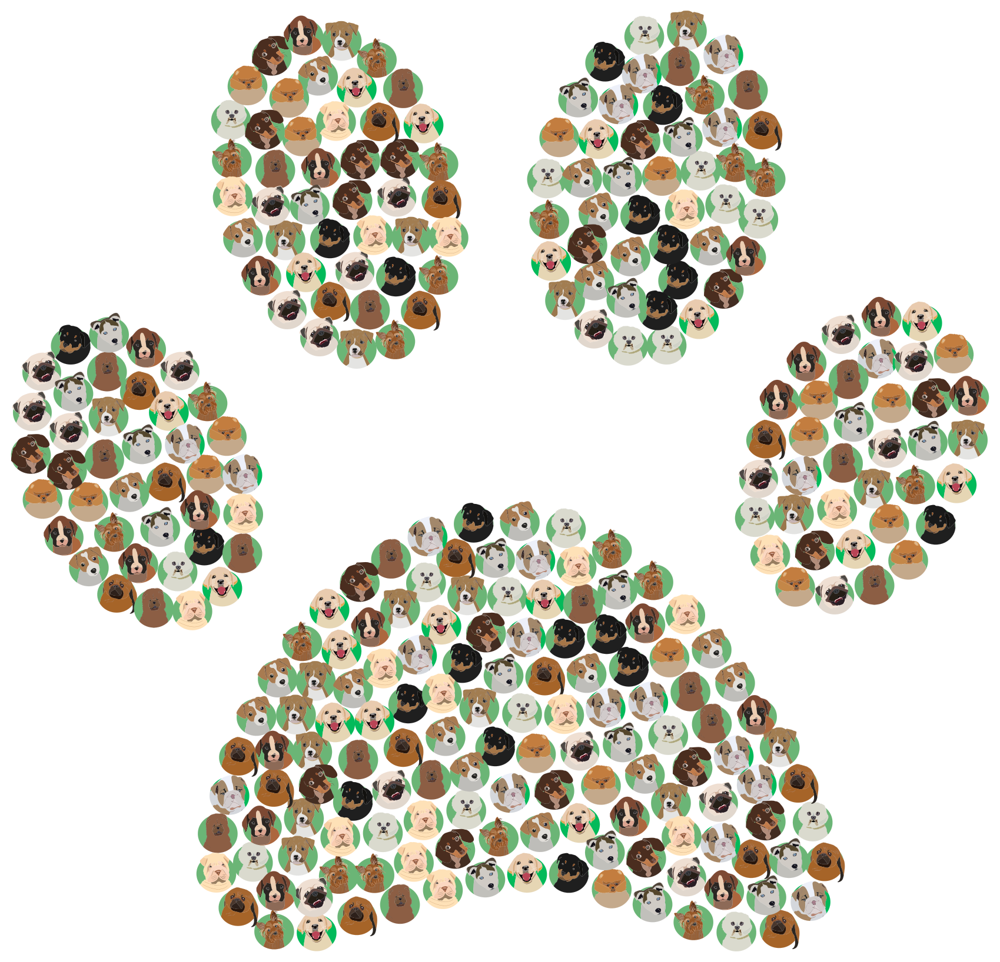

<div class="container-fluid p-0">
<nav class="navbar navbar-expand-lg navbar-light bg-primary">
    <div class="rounded-circle bg-secondary mx-2">
        
    </div>
    <a class="navbar-brand text-light fw-bold" href="home2.html">Rescate de patitas</a>
    <button class="navbar-toggler" type="button" data-toggle="collapse" data-target="#navbarSupportedContent"
        aria-controls="navbarSupportedContent" aria-expanded="false" aria-label="Toggle navigation">
        <span class="navbar-toggler-icon"></span>
    </button>

    <div class="collapse navbar-collapse d-flex justify-content-end pe-2" id="navbarSupportedContent">
        <ul class="navbar-nav mr-auto">
            <li class="nav-item">
                <a class="nav-link text-light" href="listado-mascotas.html">Mi cuenta</a>
            </li>
            <li class="nav-item">
                <a class="nav-link text-light" href="publicaciones.html">Adopciones</a>
            </li>
            <li class="nav-item">
                <a class="nav-link text-light" href="MascotaEncontradaSinChapita.html">Encontré una mascota</a>
            </li>
            <li class="nav-item">
                <a class="nav-link text-light" href="mascotasEncontradas.html">Mascotas encontradas</a>
            </li>
            <li class="nav-item">
                <a class="nav-link text-light" href="home2.html">Desconectarse</a>
            </li>
            
        </ul>
    </div>
</nav>
</div>